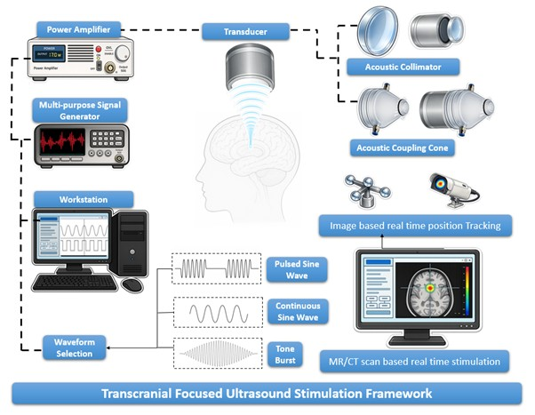
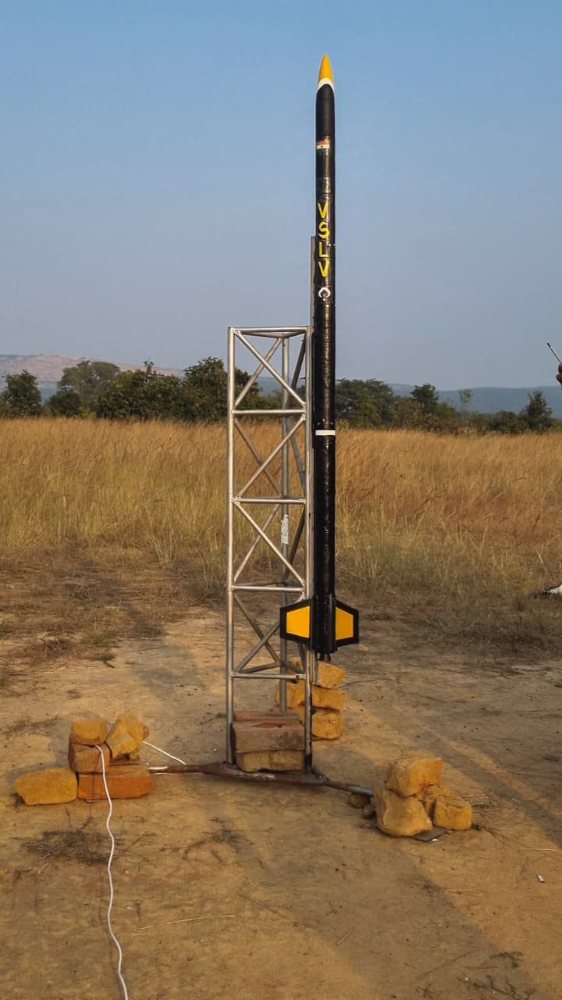

Funded Projects

Transcranial Focused Ultrasound Stimulation Device
Funded By LSRB [DRDO]
2024 - Present

VSLV: VSSUT Satellite Launch Vehicle
Student-built launch vehicle project focusing on propulsion, structure, and avionics.

CANSAT: Rocket Payload
Designed and tested a payload system for atmospheric data acquisition and recovery.